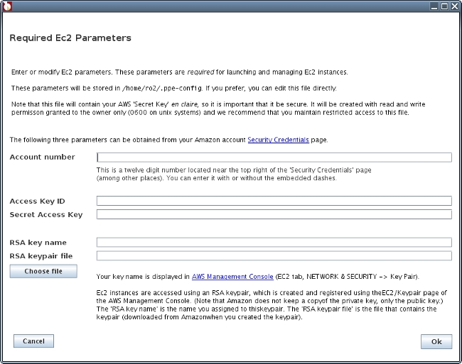
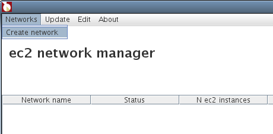
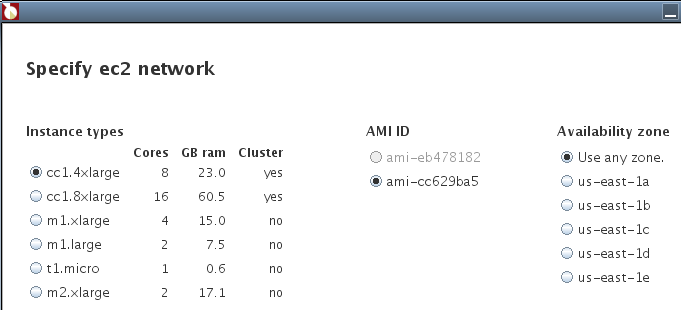
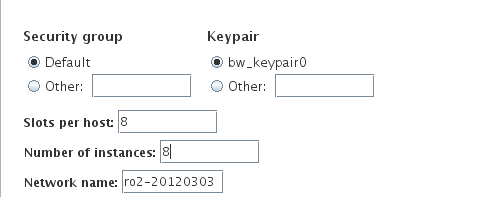
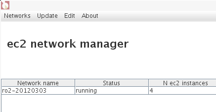
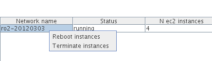

cloudRmpi Manual
March 2012, Version 1.0
Barnet Wagman bw@norbl.com
cloudRmpi is means for doing parallel processing in R, using MPI on a cloud-based network. It currently supports the use of Amazon's EC2 cloud computer service. cloudRmpi provides a mechanism to launch and manage a cloud-based network and to access an R session on the network's master MPI node (using the rreval package). cloudRmpi should work with any MPI based R package (it has been tested with Rmpi, npRmpi, and snow).
Contents
- Overview
- Requirements/Prelims
- How to use cloudRmpi
- Choosing an instance type
- Costs
- Security
- Dependencies
- Machine Images
- Architecture
- Handling problems
1. Overview
'Cloud' computing services provide a relatively low cost way of doing parallel processing. The cloudRmpi package provides a means for doing parallel processing in R using these kinds of facilities. It currently supports the creation and use of networks running Open MPI on Amazon's cloud computer service, EC2. We hope to add support for other vendors' cloud computing services in the near future.There are two main elements in the cloudRmpi package: an application for creating and managing EC2 networks (that support Open MPI and R), and functions for accessing an R session on the master node of the network.
The network manager is a java application (launched from within R with the ppe.launchNetworkManager() function; see How to use cloudRmpi, below).
A network launched with the cloudRmpi network manager contains one host that is designated the Open MPI master node. That master node runs an R session that is accessible remotely using functions in the rreval package. Using the access functions is covered in How to use cloudRmpi, below.
Note that public cloud computing services like EC2 are commercial products. See the Costs section below for a discussion of the costs involved in using cloudRmpi.
2. Requirements/Prelims
Besides installing the cloudRmpi package in R, there are few other requirements.- Java (>= 1.6)
The Java interpreter must be in your execution path. To test whether you have an accessible copy of Java, at a command line type
java -version
If Java is installed, you should get something like
(Why Java? See the Architecture section below.)
java version "1.6.0_26"
Java(TM) SE Runtime Environment (build 1.6.0_26-b03)
Java HotSpot(TM) 64-Bit Server VM (build 20.1-b02, mixed mode)
- An AWS
account.
- Once you have an account
- Register
for the EC2 service; you can
do this via AWS
Account Management.
- Create
and
download
an
EC2
RSA
keypair
using
the
AWS
Management
Console
(EC2 tab, NETWORK & SECURITY -> Key Pair). You will need the key
pair name the first time you use cloudRmpi.
- Get
the following strings from
your Amazon account Security
Credentials page.
Account number
Access Key ID
Secret Access Key
The 'Access Key ID' and 'Secret Access Key' are in the 'Access Credentials' section, in the 'Access Keys' tab. You will need these strings the first time you use cloudRmpi.
3. How to use cloudRmpi
3.1 Creating a network
In a local R sessionlibrary(cloudRmpi)
Launch the network manager:
ppe.launchNetworkManager()
The first time you use this function, you'll need to supply some values that are required to launch EC2 instances (see Requirements/Prelims section 3.2 and 3.3 ). You'll initially get the "Required Ec2 Parameters" entry window:

These values will be stored in a configuration file named .ppe-config
that
will be created in your home directory. You can change these values
using the
Edit -> Ec2 Parameters menu item in the main ppe-ompi
window or by editing the file directly.
After you've filled in this form, the main network manager window is opened. To create a network

Select an instance type
For most purposes (other than testing), you'll probably want to choose cc1.4xlarge or cc2.8xlarge because they can be run in a cluster placement group. See Choosing an Instance Type for more information. If you choose one of these instance types, the application manager will launch your instances in a cluster placement group.

Choose a machine image (AMI)
AMIs that are not compatible with the selected instance type are disabled.
Specify the availability zone.
If you've choosen an instance type that supports clusters, select 'Use any zone'; your instances will be launched in cluster group and a cluster group always runs in a single zone. Otherwise, specifying a zone insures that your instances are not spread across multiple zones (which may or may not be worth something re communications).
Specify the security group
If 'Default' is selected, ppe-ompi will create an appropriate one-time security group. See Security for details.

Network nameppe-ompi will automatically generate a unique network name (you can change it).
Slots per host
The number of slots per host is automatically generated based on the instance type selected (you can change it). This value is used to create the ompi hostfile.
Specify the number of instances
When you hit 'Continue' you'll have a chance to check the network's specification before it's launched.
3.2 Using the network
The network is ready for use when its status is "running":
Note that Amazon tools (such as the Amazon Management Console) will show your instances with status 'running' before the EC2 network manager does . AWS's monitoring lists instances as 'running' as soon as they are launched, even before the operating system has finished booting. After launching a network, network manager waits for the operating system to boot and then performs some configuration. It does not show the network's status as 'running' until all instances are booted and configured.
Connect to an R session running on the master node of the network:
ppe.startClient()
('ppe' stands for 'parallel processing on EC2').
(On a few occasions, ppe.startClient() has returned java.net.SocketException: Connection reset ..., which indicates a transmission error. If this happens, just try ppe.startClient() again.)
Once you're connected, you can evaluate expressions. E.g.
re(1+1)
will return the value 2. An expression like
re(a
<-
seq(1,100)^2)
will create an object named 'a' in the remote R session and return the value of the expression.
To retrieve an expression from the remote session
re(a)
or to assign it locally
aa
<-
re(a)
To upload an object
z
<- sin(pi)
upo(z)
upo(z)
(To move large objects, you may want to use the scp transfer functions, scpUpload() and
scpDownload(); see the package documentation for details.)
You can evaluate any expression in the remote session, including things like
re(library(npRmpi))
re(ls())
re(ls())
It is perfectly acceptable to upload functions, e.g.
fn
<-
function(x)
{
quantile(x,seq(0,1,0.1))
}
upo(fn)
upo(fn)
Errors will be handled gracefully, e.g.
re(lss())
yields the error message
<simpleError in eval(expr, envir, enclos): could not find function "lss">
When your done using the network, close the connection with
ppe.closeClient()
and, more importantly, terminate the network using the application manager

Remember that Amazon will be charging you for your EC2 instances until you terminate them. You can also terminate your network with ppe.terminateNetwork() or with the Amazon Management Console.
3.3 Accessing the network with ssh
Alternatively, you can access your ec2 network via ssh. EC2 instances are accessible using you RSA key (but not via password). E.g.ssh
-i
your_keypair_file.pem
ec2-user@ec2-174-129-172-112.compute-1.amazon.com
where ec2-174-129-172-112.compute-1.amazon.com is the URL of the network's master node. (You can get the master node's URL from the network manager or with the R function ppe.getMasterNodeURL(...). See the cloudRmpi package documentation for details.)
Once you've ssh'd into the master node you can start a standard R session from the command line.
4. Choosing an instance type
Amazon's EC2 service supplies computers with various processor types and memory configurations, which it terms instances. While you can use cloudRmpi with any instance type, there is a substantial advantage to using instance types cc1.4xlarge or cc2.8xlarge for parallel processing. Each of these instance types can be launched in a cluster placement group, which guarantees a specified bandwidth between instances. Other instance types cannot (except for the gpu cluster instance type).When cloudRmpi launches a network of instances that can run in a cluster, those instances are always put into a placement group. This provides the fastest network communications available from AWS. According to Amazon, cluster placement groups are intended for hpc.
5. Costs
There are no sunk costs when using EC2 (or in creating or maintaining an AWS account); charges are strictly based on usage. The main costs are the hourly instance charges, which vary with the instance type. AWS also charges for data transfers in and out of EC2 instances (see the "Data Transfer" section of Amazon EC2 Pricing), although transfer charges are usually small compared to instance charges. There is no charge for data tranfers between instances in the same 'region'.6. Security
Since EC2 is a web base service, security is inevitably a concern. Following is a brief description of security associated with cloudRmpi.
The cloudRmpi network manager launches and manages instances using the AWS SDK for Java, which generates commands in the underlying EC2 api, composed of REST and SOAP commands. By default, all commands are transmitted using SSL. Commands must include the user's AWS 'Access Key ID' and 'Secret Access Key'. cloudRmpi reads these strings from the configuration file .ppe-conf in the user's home directory. This file is en claire, so it is important that it not be publicly accessible. On Unix systems, this file's permission bits should be set to 0600 (e.g. chmod 0600 .ppe-config).
EC2 instances are launched within what AWS terms a security group, which is equivalent to a firewall. By default, cloudRmpi creates a one-time security group and launches instances into that group. The default security group has the following configuration:
| From port |
To port |
Protocol |
Accessible from |
| 22 |
22 |
tcp |
All ip addresses |
| 1 |
21 |
tcp |
Group members only |
| 23 |
65535 |
tcp |
Group members only |
| 1 |
65535 | udp |
Group members only |
In other words, instances within the network have unrestricted access to each other (which is neccessary for Open MPI), but are only accessible from the rest of the world via ssh (port 22).
Each EC2 instance is associated the an RSA key. The public portion of this key must be registered with AWS before instances can be launched; it's name is specified as part of instance requests. After instances are launched, cloudRmpi uses the private key to access the instances (via ssh), to perform some setup. cloudRmpi gets the key name and the path to the keypair file from .ppe-conf. Obviously is it is important to keep the configuration file and the key pair file secure. The private key exists only on the user's local system. Amazon provides a utility for creating an RSA keypair and recording the public key, but it does not keep a copy of the private key.
cloudRmpi instances are configured to support ssh login using the RSA key only. There are no passwords. (This is standard practice with EC2 instances.) Each instance has a user named ec2-user. The only way to access a node in a cloudRmpi network is via ssh, e.g.
ssh
-i
your-rsa-keypair-file.pem
ec2-user@ec2-123-456-789-123.compute-1.amazon.com
and similarly with scp. Communications between your local R session and the R session on the master node of the EC2 network go through a pair of java apps, one on the local system and the other on the network master node (see Architecture for details). These java apps perform socket level communication via ssh port forwarding. So when you use functions like re() or upo() to perform operations in the remote R session, communications is via ssh.
7. Dependencies
cloudRmpi depends on two R
packages, digest and rreval. It also uses the following
third-party packages:- AWS SDK for Java
Note that the AWS sdk distribution itself contains
third party software
(see inst/third-party/aws-java-sdk-1.3.3/third-party
in the ppe-ompi distribution
for details).
- Ganymed SSH-2 for Java
- GNU Trove: High performance collections for Java.
We have previously released the network management application in the ppe-ompi project (which is released under GPL 3.0).
8. Machine images
An EC2 network consists of one or more hosts (termed instances by Amazon) running a virtualized operating system termed an Amazon Machine Images (AMI). In addition to the operating system, an AMI can contain application software and can be configured to launch applications when booted.There are currently two publicly available AMIs with cloudRmpi installed:
| AMI ID |
ami-58bb6431 | |||||||||
| Name |
cloudRmpi 1.0 hvm Northbranchlogic | |||||||||
| Virtualization type |
hvm |
|||||||||
| Operating system |
Linux, image based on amazon/EC2 CentOS 5.4 HVM AMI | |||||||||
| Open MPI |
1.4.3 |
|||||||||
| R |
2.14.2 |
|||||||||
| R packages |
Rmpi npRmpi snow rreval foreach
doSNOW doMPI (and package they depend on). |
|||||||||
| Disk space |
|
| AMI ID |
ami-5608d73f | ||||||
| Name |
cloudRmpi 1.0-1 pv Northbranchlogic | ||||||
| Virtualization type |
pv |
||||||
| Operating system |
Linux, based on amazon/amzn-ami-2010.11.1-beta.x86_64-ebs. This appears to be based on Centos. | ||||||
| Open MPI |
1.4.3 |
||||||
| R |
2.14.2 |
||||||
| R packages |
Rmpi npRmpi snow rreval foreach
doSNOW doMPI (and package they depend on). |
||||||
| Disk space |
|
To use a cluster placement group, you must use an image with hmv virtualization. Otherwise you can use a paravirtual image (see Choosing an instance type).
These images are configured to start an R session and launch the server function rreServer() when booted. I.e. they are ready to be to accept a connection from ppe.startClient() as soon as the boot process is complete. They have (nearly) all R packages installed.
9. Architecture
cloudRmpi has two main components: the network manager and a client-server mechanism for evaluating expressions in an R session running on the network's master MPI node.Network Manager
The network manager is java app that is launched on the local systemby the function ppe.launchNetworkManager(). Communications between the R session and the network manager are via a socket. The network manager is always launched on the same system as the local R client. Communications between the R session and the network manager are en clair.The network manage creates a network of EC2 instances using the AWS SDK for Java which sends command to AWS via using SSL. As part of the request for instances that it submits to AWS, it creates a one time security group (see Security for details).
After submitting a request for instances, the network manager continually monitors the status of the request and the status of the instances once they are launched. Once all instances are available, it performs the following configuration related operations:
- Designates one instance as the MPI master node, and the rest as slaves.
- Creates a one time RSA keypair and installs it on the master. The public portion is installed on the slaves. NOTE that this keypair is used for communications between nodes only and is completely distinct from the user's keypair. The user's keypair is used for launching instances and for access to the network. The private key of your keypair resides on your local system and is never transferred anywhere.
- Creates an ompi host file, ~ec2-user/ompi-hostfile on the master.
- Disables hyperthreading on all instances.
Remote evaluation, client-server communications
cloudRmpi uses the rreval package to access an R session on the master MPI node of the EC2 network. cloudRmpi has some functions (such as ppe.startClient()) that are essentially wrappers for rreval functions; they make using rreval on with an EC2 network more convenient, but the underlying code is the same.rreval is a means for using R on a remote system from within a local R session. Any R expression can be evaluated on the remote server. All non-graphical results are returned to the local R session: this includes the results of remote evaluations and (nearly) all textual output, including errors and warnings.
Expressions are evaluated by an R session on the MPI master node that is running the rreval server. When a local R session connects to a server, the local client has exclusive use of the remote R session until it disconnects; i.e. an R server handles only one client at a time.
Communication between the client and server is performed by a pair of java apps, rreval.RReClientApp and rreval.RReServerApp. The local R session sends a command to the rreval.RReClientApp. After performing error checks, the command is sent to rreval.RReServerApp which runs on the remote system. It in turn passes the command to the rreval server. The results of evaluation are returned by this path in reverse.
The two java apps communicate via ssh port forwarding, so communication between them should be secure. Note that communications between an R session and a java app are en clair. These are local socket communications so security should not an issue.
10. Handling problems
Handling errors in a parallel processing environment can be messy, and R parallel processing packages are no exception. For example, if you use the npRmpi functionmpi.bcast.cmd(bw.hit
<-
npcdensbw(y
~
x,data=obs),caller.execute=TRUE)
without first broadcasting obs (i.e. mpi.bcast.Robj2slave(obs)), the call to npcdensbw will hang and there's no way to interrupt it.
Although it sounds crude, the best way we've found to handle this kind of situation is to simply reboot all the instances in the network. The network manager has a command to reboot an entire network:
Of course you will loose everything in your remote R session. We usually make liberal use of re(save.image()). When you reboot a EC2 instance, anything you've written to disk is preserved (which is not the case when you terminate an instance). It's not a terribly elegant solution, but it's the best we've come up with so far.